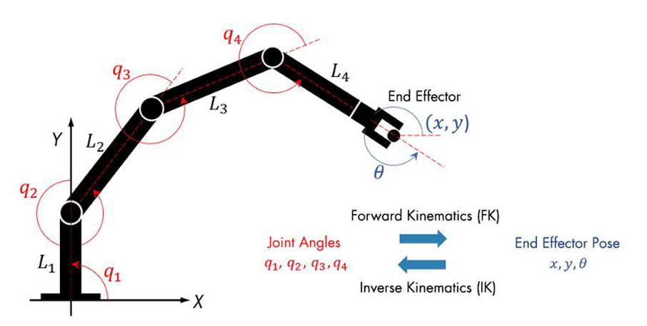
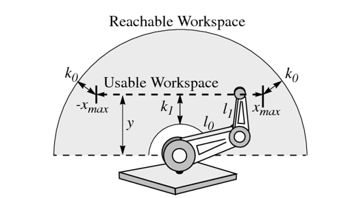
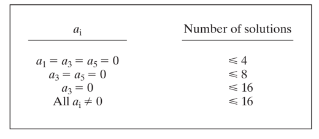
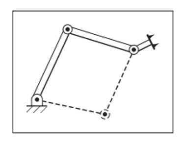
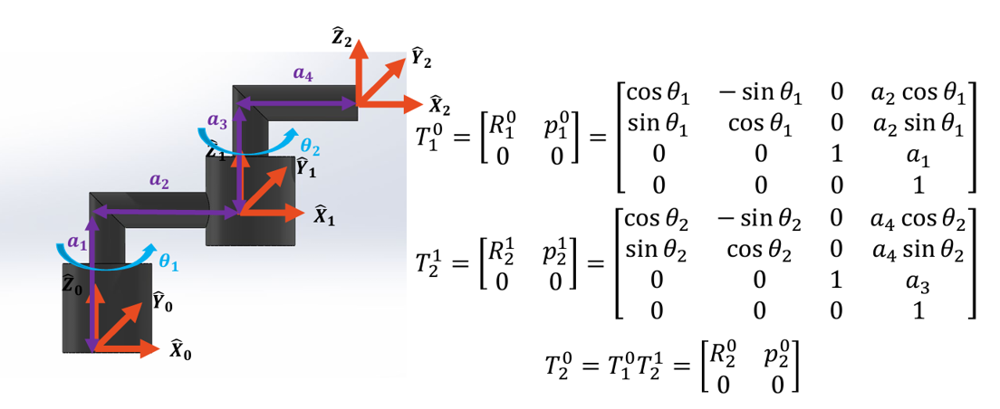
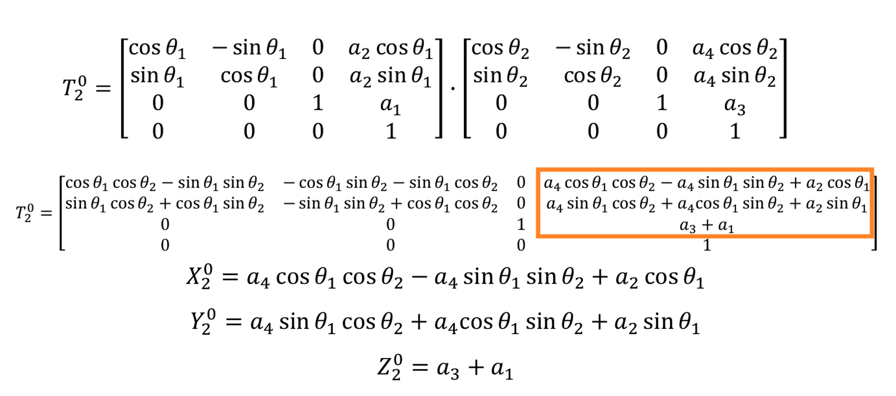
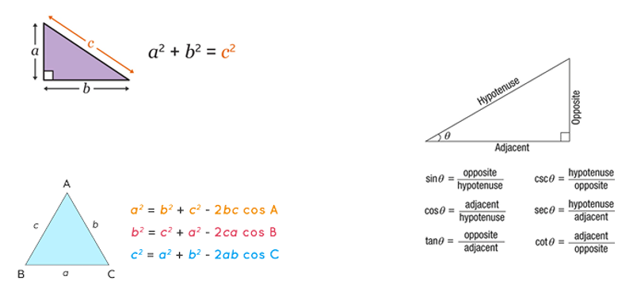
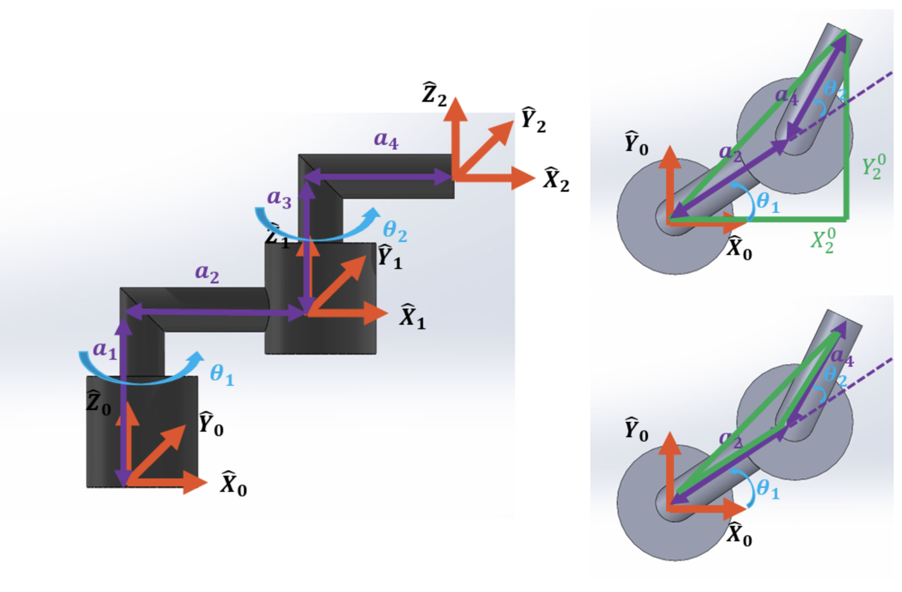

Inverse kinematics
Introduction
In the previous section, we have derived the forward kinematics of the M1 manipulator. In this section, we will derive the inverse kinematics of the M1 manipulator. The inverse kinematics is the process of finding the joint angles given the end-effector position and orientation.
1. Introduction
Inverse kinematics (IK) answers:
Given a desired end-effector pose, find the joint variables that achieve it.
- Forward kinematics (FK):
$$ q \;\longrightarrow\; {}^{0}_{n}T(q) $$
- Inverse kinematics (IK):
$$ {}^{0}_{n}T_d \;\longrightarrow\; q $$
Where:
- \(q \in \mathbb{R}^n\) are joint variables (angles for revolute joints, displacements for prismatic joints).
- \({}^{0}T_n \in SE(3)\) is the homogeneous transform of the end-effector frame \(\{n\}\) relative to base frame \(\{0\}\).

Why IK is hard
- The mapping is nonlinear.
- Solutions may be none, unique, finite multiple, or infinite.
- Constraints matter: joint limits, collisions, singularities, actuator limits.
2. Solvability
IK solvability asks two questions:
- Existence: does at least one \(q\) satisfy the desired pose?
- Multiplicity: if yes, how many solutions exist?
2.1 Existence (reachability)
A pose is feasible only if it lies in the robot’s reachable set:
- Position reachability: the point must lie in the robot workspace (consider link lengths and joint limits).
- Orientation reachability: the robot must be able to realize the desired orientation given its joint structure.

Reachability can be checked with necessary conditions before attempting IK, this isn't a guarantee of a solution but can quickly rule out impossible targets to filter out bad targets and save computation time. As the only way to know for sure if a solution exists is to try to solve the IK.
- Position reachability: check if the desired position is within the workspace (e.g., within a sphere of radius equal to the sum of link lengths).
Let the desired end effector position in the base frame be:
$$ \rho = ||p_d - p_0|| = \sqrt{(p_{d,x} - p_{0x})^2 + (p_{d,y} - p_{0y})^2 + (p_{d,z} - p_{0z})^2} $$ Where \(p_0\) is the position of the base frame.
If the manipulator has link lengths L1, L2, ..., Ln, then a necessary condition (ignoring joint limits and offsets) is:
- Maximum reach:
Where \(L_i\) is the length of the i-th link. This means that the desired position must be within a sphere centered at the base with radius equal to the sum of the link lengths.
- Minimum reach (if the robot cannot fold onto itself):
Where \(L_{max}\) is the length of the longest link. This means that the desired position must be outside a sphere centered at the base with radius equal to the difference between the longest link and the sum of the other links.
2.2 Degree-of-freedom count
A full 3D pose has 6 independent constraints (3 position + 3 orientation).
- If \(n < 6\): cannot generally achieve an arbitrary pose in 3D; only a subset is reachable.
- If \(n = 6\): can potentially achieve a general pose (subject to geometry/singularities).
- If \(n > 6\): redundant; infinitely many solutions may exist for a given pose.


2.3 Singularity and solvability
Even with \(n \ge 6\), solutions may fail or become numerically unstable near singularities. A singularity is a specific, problematic configuration of a robot arm where the mechanical joints align in a way that causes the robot to lose one or more degrees of freedom
Using the Jacobian \(J(q)\):
- At a singular configuration, \(\mathrm{rank}(J) < \min(6,n)\).
- Near singularities, small end-effector motions may require very large joint motions.
3. The Notion of Manipulator Subspace When \(n < 6\)
When \(n < 6\), the robot cannot (in general) control all 6 pose components. Instead, it controls a subspace of task variables.
3.1 Practical interpretation for 3-DOF arms
A 3-DOF articulated arm often aims for:
- Position-only control: \((x,y,z)\) with no full orientation control, or
- Planar tasks: \((x,z)\) + one angle, etc.
Design implication: choose a task consistent with available DOF, e.g.:
- Solve IK for position only.
- Fix a desired orientation (or part of it) and solve the remaining.
4. Solution Methods
Assuming the target pose is within the robot's reachable workspace, a 6-DOF manipulator will have at least one valid joint configuration to achieve that pose, and often several.
Note
This only applies to numerical methods, as analytical and geometric methods may have multiple solutions or no solution at all depending on the manipulator's configuration and the desired end-effector pose.
-
Algebraic methods(Closed Loop): These methods involve deriving closed-form equations for the joint angles based on the end-effector position and orientation. They are computationally efficient but may not always be possible for complex manipulators.
-
Numerical methods: These methods involve iterative algorithms to find the joint angles that minimize the error between the desired and actual end-effector position and orientation. They are more flexible but can be computationally expensive.
-
Geometric methods(Closed Loop): These methods involve using geometric relationships between the joints and the end-effector to derive the joint angles. They can be computationally efficient but may not always be possible for complex manipulators.
4.1 Geometric approach
Uses geometry and trigonometry:
- Project a 3D problem into a plane.
- Build triangles with known link lengths.
- Apply law of cosines/sines and angle addition rules.
Pros
- Intuitive.
- Often yields multiple solutions explicitly (e.g., elbow-up/down).
Cons
- Depends strongly on a convenient geometry.
- Becomes messy with offsets and non-intersecting axes.
4.2 Algebraic approach
Uses equations from homogeneous transforms:
- Write \({}^{0}_{n}T(q) = {}^{0}_{n}T_d\)
- Equate matrix elements, producing nonlinear equations in joint variables.
Pros
- Systematic.
- Can be applied even when geometry is not visually simple.
Cons
- Can lead to high-degree polynomials and many extraneous solutions.
- Requires careful handling of trigonometric identities.
5. Algebraic Solution by Reduction to a Polynomial
A common algebraic workflow:
-
Start from:
\[ {}^{0}_{n}\!T(q) = {}^{0}_{n}\!T_d \]Where:
- \({}^{0}_{n}\!T(q)\) is the forward kinematics transform expressed in terms of joint variables \(q\).
- \({}^{0}_{n}\!T_d\) is the desired end-effector pose (position + orientation).
-
Equate entries of the rotation matrix and position vector.
\[ {}^{0}_{n}\!T(q)= \begin{bmatrix} {}^{0}_{n}\!R(q) & {}^{0}\!p_n(q) \\ 0\;0\;0 & 1 \end{bmatrix}, \qquad {}^{0}_{n}\!T_d= \begin{bmatrix} R_d & p_d \\ 0\;0\;0 & 1 \end{bmatrix}. \]
which we can break down into:
If we expand these:
and
To finally equate the elements
Position equations:
Orientation equations, where a standard approach is to use 3 equations from rotation using one column (or two columns) of R.
- Use identities such as: $$ \sin^2\theta + \cos^2\theta = 1 $$
-
Convert trig equations into a single variable using substitutions, e.g.:
\[ \begin{aligned} t &= \tan(\theta/2),\\ \sin\theta &= \frac{2t}{1+t^2},\\ \cos\theta &= \frac{1-t^2}{1+t^2}. \end{aligned} \] -
Reduce to a polynomial in \(t\).
- Solve the polynomial to obtain candidate \(\theta\), then back-substitute to find remaining joints.
5.1 Example: 3-DOF planar arm


6. Geometric Solution
A common geometric workflow:
- Identify a plane of motion (e.g., the plane formed by the first three joints).
- Project the desired end-effector pose onto this plane.
- Use the projected position to form triangles with known link lengths.
- Apply the law of cosines/sines to solve for joint angles.

6.1 Example: 3-DOF planar arm

7. Numerical Methods
Closed-form IK is fast and exact when the robot geometry allows it. However, many real manipulators include offsets, non-intersecting axes, tool transforms, or constraints that make a closed-form solution difficult or impossible. Numerical IK treats IK as an iterative problem: start from a guess and improve it until the pose error is sufficiently small.
Let the desired end-effector pose be:
and the current pose from FK be:
We define the pose error as:
Position error(Typical for n<6):
Full pose IK(n≥6):
Where \(e_w\) is a function that measures the orientation error between the desired and current rotation matrices (e.g., using axis-angle representation).
Aiming to find:
Where:
- \(q^*\) is the optimal joint configuration that minimizes the pose error.
- \(e(q)\) the task-space error produced by using joints q. It depends on FK.
- \(\|e(q)\|^2\) is the squared norm of the error, which we want to minimize. Squaring emphasizes larger errors and ensures a non-negative cost.
7.1 Orientation error
When orientation is included, we need a minimal 3-parameter error. A common choice is based on the rotation matrix error:
7.2 Linearization and Jacobian
A Jacobian is a matrix of all first-order partial derivatives of a vector-valued function, representing the best linear approximation of a function at a given point. It acts as a multivariate derivative, measuring how a change in input variables scales or distorts space in coordinate transformations.
Your forward kinematics gives a mapping from joints to end-effector position (or pose). In this context the Jacobian is the matrix of partial derivatives that tells you how sensitive the end-effector is to each joint:
which would mean that if i move q_i tiny bit, which direction does the end-effector move, and by how much.
7.3 Example 2-DOF planar arm for jacobian
Let's suppose we have a robotic arm with two joints (θ1, θ2) and two links (l1, l2). The position of the end-effector in Cartesian coordinates is given by:
Define:
The position Jacobian \(J_p(q)=\frac{\partial p}{\partial q}\) for this system is:
This jacobian provide the local mapping:
and por small changes:
Giving us the following interpretation:
- A small change in θ1 will affect both px and py, as it influences the position of both links.
- A small change in θ2 affects both px and py, by moving only the second link relative to the first, with the effect depending on the current configuration (θ1 and θ2).
8 Implementation of numerical IK using Jacobian
To solve IK numerically, we can use the Jacobian to iteratively update our joint angles, and we must assume that we have:
- Forward kinematics (FK) to compute the current end-effector output \(p(q)\)
- A desied target pose for the end-effector \(p_d\)
- An error definition \(e(q) = p_d - p(q)\)
- The Jacobian \(J(q)=\frac{\partial e}{\partial q}\) (often \(J \approx -\frac{\partial p}{\partial q}\); the sign does not matter if you keep it consistent)
We will solve IK by iteratively updating:
8.1 Setup
Choose the task - Position-only - Full pose
Define Objective
Stopping conditions
- \(\|e(q)\| < \epsilon\) (pose error is small enough)
- Maximum iterations reached
- No improvements for N iterations
Safety Constraints
- Joint limits: \(q_{min} \le q \le q_{max}\)
- Step size limits: \(\|\triangle q\| < \triangle q_{max}\)
8.2 Gradient descent
This is the simplest approach, but can be slow and get stuck in local minimum.
Update rule:
Let the cost be \(f(q) = \frac{1}{2}\|e(q)\|^2\). Then:
Gradient descent uses:
Where \(\alpha\) is a step size parameter that controls how big of a step we take in the direction of the negative gradient.
Implementation plan:
- Compute current end-effector pose: \(p(q)\) via FK.
- Compute error: \(e(q) = p_d - p(q)\).
- Compute Jacobian: \(J(q)\).
- Compute update: \(\triangle q = \alpha J^T e\).
- Limit \(\triangle q\) and apply joint limits
- Update joints: \(q \leftarrow q + \triangle q\).
- Check stopping conditions and repeat.
Pros: simple and easy to implement. Cons: can be slow, sensitive near singularities
8.3 Gauss-Newton (GN) for least-squares
Gauss–Newton is the standard least-squares solver for nonlinear problems. It approximates the second-order curvature using only the Jacobian.
Update rule:
Solve the normal equations:
Then update:
Implementation plan:
- Compute current end-effector pose: \(p(q)\) via FK.
- Compute error: \(e(q) = p_d - p(q)\).
- Compute Jacobian: \(J(q)\).
- Form \(A = J^T J\) and \(b = J^T e\). Here we use the transpose \(J^T\) instead of the inverse \(J^{-1}\) because \(J\) is rarely square.
- Solve linear system \(A \triangle q = b\) for \(\triangle q\) (e.g., using Cholesky or SVD).
- Limit \(\triangle q\) and apply joint limits.
- Update joints: \(q \leftarrow q + \triangle q\).
- Check stopping conditions and repeat.
Pros: faster convergence than gradient descent, especially near the solution. Cons: can be unstable if \(J^T J\) is near-singular
8.4 Levenberg-Marquardt (LM) / Damped Least Squares(DLS)
LM is Gauss-Newton plus damping for stability.
Update rule:
- \(\lambda\) is damping
- Larger \(\lambda\) → more stable, smaller steps.
- Smaller \(\lambda\) → faster, closer to GN.
Implementation plan:
- Compute current end-effector pose: \(p(q)\) via FK.
- Compute error: \(e(q) = p_d - p(q)\).
- Compute Jacobian: \(J(q)\).
- Form either:
- LM: \(A = J^T J + \lambda I\), \(b = J^T e\) solve \(A \triangle q = b\).
- DLS: \(A = J J^T + \lambda^2 I\), solve \(Ay = e\) then \(\triangle q = J^T y\).
- Limit \(\triangle q\) and apply joint limits.
- Update joints: \(q \leftarrow q + \triangle q\).
- Check stopping conditions and repeat.
Start with \(\lambda_0\) (0.01 to 0.1) if error decreases, \(\lambda \leftarrow \lambda / 2\), else \(\lambda \leftarrow \lambda * 2\).
Pros: more robust than GN, can handle singularities better. Cons: requires tuning \(\lambda\), too large \(\lambda\) can be slower than GN.
There's other methos like Newton-Raphson, BFGS, etc. but GN and LM are the most common for IK. because they leverage the structure of the problem (least-squares) and are relatively efficient.
9. Geometric Jacobian
We previously discussed computing the Jacobian using an analytic approach (taking direct partial derivatives). However, as a manipulator's Degrees of Freedom (DOF) increase, the analytic equations become massive and computationally intractable.
To solve this, the industrial standard is to compute the Geometric Jacobian. Instead of deriving complex calculus, this method builds the \(6 \times n\) Jacobian matrix column by column using data we already calculated during Forward Kinematics.
For an \(n\)-DOF manipulator, the Jacobian is constructed as: $$ J = \begin{bmatrix} J_1 & J_2 & \dots & J_n \end{bmatrix} $$ For the \(i\)-th joint, the column \(J_i\) is a \(6 \times 1\) vector composed of a linear velocity part (\(J_{v_i}\)) and a rotational (angular) velocity part (\(J_{\omega_i}\)): $$ J_i = \begin{bmatrix} J_{v_i} \ J_{\omega_i} \end{bmatrix} $$ Depending on whether joint \(i\) is prismatic (sliding) or revolute (rotating), we construct its column using the formulas in the following table: $\(\begin{array}{c|c|c} & \textbf{Prismatic} & \textbf{Revolute} \\ \hline \textbf{Linear } (J_{v_i}) & R_{i-1}^0 \begin{bmatrix} 0 \\ 0 \\ 1 \end{bmatrix} & R_{i-1}^0 \begin{bmatrix} 0 \\ 0 \\ 1 \end{bmatrix} \times (d_n^0 - d_{i-1}^0) \\[18pt] \hline \textbf{Rotational } (J_{\omega_i}) & \begin{bmatrix} 0 \\ 0 \\ 0 \end{bmatrix} & R_{i-1}^0 \begin{bmatrix} 0 \\ 0 \\ 1 \end{bmatrix} \end{array}\)$
9.1 Understanding the Matrix Notation
The elegance of this method is that every variable in the table can be extracted directly from your existing homogeneous transformation matrices (\(T_{i-1}^0\)). You do not need to calculate anything new; you just pull the right vectors.
Here is exactly what each term means and how to extract it:
- \(R_{i-1}^0 \begin{bmatrix} 0 \\ 0 \\ 1 \end{bmatrix}\) (The Axis of Motion): In the Denavit-Hartenberg (D-H) convention, all joints translate or rotate along their local Z-axis. Multiplying the rotation matrix \(R_{i-1}^0\) by \(\begin{bmatrix} 0 & 0 & 1 \end{bmatrix}^T\) is simply a mathematical way of extracting the third column of the rotation matrix. This gives you the 3D vector representing the joint's Z-axis relative to the base frame.
- \(d_{i-1}^0\) (The Joint Position): This is the 3D position \((x, y, z)\) of joint \(i\). You extract this by taking the first three rows of the last column (the translation vector) of the transformation matrix \(T_{i-1}^0\).
- \(d_n^0\) (The End-Effector Position): This is the 3D position of the final end-effector. You extract this from the translation vector of your final, complete Forward Kinematics matrix \(T_n^0\).
9.2 Interpretation of the Geometric Jacobian
If we substitute these matrix terms into simpler variables—calling the Z-axis vector \(z_{i-1}\) and the positions \(p_{i-1}\) and \(p_n\)—the physical meaning of the math becomes very clear:
For a Prismatic Joint:
- Linear: The joint slides along its Z-axis (\(z_{i-1}\)), so the linear velocity is exactly that vector.
- Rotational: A sliding joint produces zero rotation, so it is a zero vector \(\begin{bmatrix} 0 \\ 0 \\ 0 \end{bmatrix}\).
For a Revolute Joint:
- Linear: Rotation causes the end-effector to swing in an arc. The linear velocity is the cross product of the axis of rotation (\(z_{i-1}\)) and the vector pointing from the joint to the end-effector \((p_n - p_{i-1})\).
- Rotational: The joint rotates exactly around its Z-axis (\(z_{i-1}\)), so the rotational velocity is that vector.